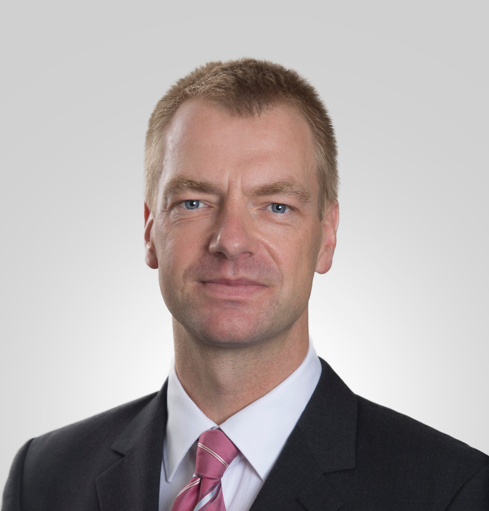

Speakers
|  | Thomas Ploetz Georgia Institute of Technology Title: TBC Abstract: TBC Bio: Thomas Ploetz is a Computer Scientist with expertise and almost two decades of experience in Pattern Recognition and Machine Learning research (PhD from Bielefeld University, Germany). He works as a Professor of Computing at the School of Interactive Computing at the Georgia Institute of Technology in Atlanta, USA. His research agenda focuses on applied machine learning, that is developing systems and innovative sensor data analysis methods for real world applications. Primary application domain for his work is computational behavior analysis where he develops methods for automated and objective behavior assessments in naturalistic environments, thereby making opportunistic use of ubiquitous and wearable sensing methods. Main driving functions for his work are "in the wild" deployments and as such the development of systems and methods that have a real impact on people's lives. Thomas has been very active in the mobile and ubiquitous, including wearable computing community. He is co-editor in chief of the Proc. of the ACM on Interactive, Mobile, Wearable, and Ubiquitous computing technology (IMWUT), has twice been co-chair of the technical program committee of the International Symposium on Wearable Computing (ISWC), and was general co-chair of the 2022 Int. Joint Conf. On Pervasive and Ubiquitous Computing (Ubicomp). Thomas is a Distinguished Member of the ACM. More info here |
 |
Yuntao Wang Tsinghua University Title: TBC Abstract: TBC Bio: TBC |